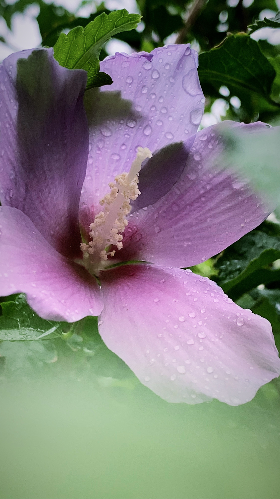

Annie Khan
Aspiring Web Developer

Summary
Biotechnology graduate with a 3.6 GPA, specializing in cancer cell research using advanced bioinformatics software. Seeking opportunities in web development and social media management. Strong lab background with extensive biosafety training. Adaptable and eager to contribute to innovative projects.
Education
- 2014-2016: O levels from Iqra Apsacs
- 2017-2019: A levels from The City School
- 2019-2023: BS Biotechnology from Balochistan University of Information Technology, Engineering and Management Sciences
Work Experience
- Thesis Project: Conducted research on cancer cells using advanced bioinformatics software (2022-2023).
- Laboratory Experience: Completed coursework and gained hands-on experience in laboratory techniques relevant to biotechnology.
- Biosafety Training: Successfully completed multiple biosafety training sessions, ensuring compliance with industry regulations.
Skills
- Content Writing: Proficient in creating engaging and informative content for various platforms.
- Photography: Skilled in capturing high-quality images for personal or professional use.
- Software Proficiency: Experienced in working with various software programs, including [Linux, Autodock Vina, OpenEye Scientific, Oracle].
- Data Collection: Proficient in collecting, organizing, and analyzing data for research purposes.
- Biosafety Training: Completed comprehensive training in biosafety protocols and procedures, ensuring adherence to industry standards.
- Social Media Marketing: Content creation for international clients.
Certification
- Certificate in Biosafety Training
- Laboratory Safety and Biosafety Protocol Certification (LSBPC)
Hobbies
- Painting: Enjoy expressing creativity through various painting techniques and mediums.
- Journaling: Regularly engage in journaling as a means of reflection and personal growth.
- Photography: Passionate about capturing moments and scenes through photography as a form of artistic expression.
- Self-Improvement Book Reading: Dedicate time to reading self-improvement books to enhance personal and professional development.
- Gym: Maintain an active lifestyle through regular